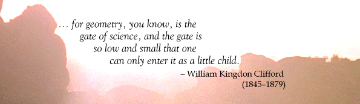
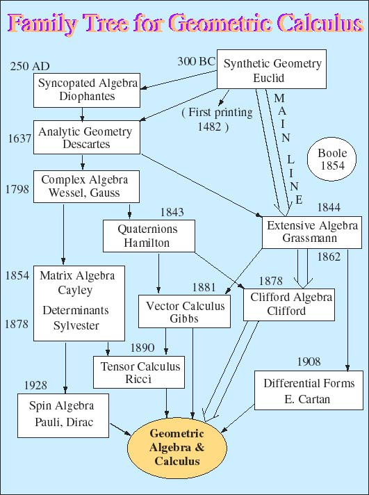

Though Leibniz articulated the dream of a universal geometric calculus in the seventeenth century, its realization began in 1844 with Hermann Grassmann's great work Die Lineale Ausdehnungslehre. Grassmann's Vision was so far ahead of its time, however, that it took more than a century to be widely appreciated [Schubring, 1996]. In the meantime Grassmann penetrated deep into the thinking of such excellent mathematicians as Peano [1888] and Whitehead [1848], but their work failed to advance or promulgate his vision. Many of his ideas were rediscovered and/or further developed anonymously in various branches of mathematics, but without his unifying perspective.
Grassmann's program to develop a universal geometric calculus reemerged in 1966 with the book Space-Time Algebra (STA) by David Hestenes, a refinement of his doctoral dissertation (UCLA, 1963). The idea of geometric algebra was given its modern form and reinvigorated by more than a century of advances in mathematics and physics since Grassmann. The main mathematical progenitors of Geometric Algebra (GA) and Geometric Calculus (GC) are shown in the Family Tree below. The roles of theoretical physics and the Lecture Notes of Marcel Riesz [1958] in stimulating the initial synthesis are described in the article Clifford Algebra and the Interpretation of Quantum Mechanics. On balance, applications to physics have done more to advance GA than pure mathematics research.
The book Space-Time Algebra provided a kind of "proof of concept." It showed how geometric algebra provides compact, coordinate-free formulations for basic equations of physics as well as new insights into their geometric structure. However, to take full advantage of these new formulations, new computational tools and methods or, at least, coordinate-free reformulations and adaptations of old methods were needed. This has stimulated the development of Geometric Calculus along several lines to the present day.
The most comprehensive treatment of the mathematical theory is given in the book Clifford Algebra to Geometric Calculus [1984]. Except for the last chapter added in 1979, the manuscript was ready for publication by 1976 but did not appear in print until 1984, owing to an unfortunate series of publishing mishaps. Papers with extensions and improvements in the calculus are collected in Universal Geometric Calculus. With general arguments and many examples, the case is made there and elsewhere that geometric algebra is a more efficient general computational tool than matrix algebra. It is therefore a candidate to supplant (or subsume) matrix algebra in computer software and software designs for scientific computation. Indeed, the use of geometric algebra in Computer-Aided Geometric Design, Computer Vision and robotics is expanding rapidly.
The applications of GA to physics are now so diverse and extensive that
there is a need to organize them in books for greater accessibility. In
the meantime, the GA web sites here and at Cambridge serve that function
in the form of "online books." These are the only sites expressly concerned
with developing a Universal Geometric Calculus. The most exciting developments
are in relativistic quantum mechanics and gravitation theory, where GA
has brought new insights and simplifications. The book in progress Spacetime
Calculus is intended as a compact introduction to this domain.


References
H. Grassmann, 1844, "Linear Extension Theory" (Die Lineale Ausdehnungslehre), translated by L. C. Kannenberg in The Ausdehnungslehre" of 1844 and Other Works (Chicago, La Salle: Open Court Publ. 1995).
G. Peano, Geometric Calculus according to the Ausdehnungslehre [1888] of H. Grassmann, translation copyright 1997 by L. Kannenberg, who can be contacted at kannenbel@woods.uml.edu.
M. Riesz, Clifford Numbers and Spinors, (from lecture notes made in 1957-8). Edited by E. Folke Bolinder and P. Lounesto, Kluwer Academic Publisher, [1993].
G. Schubring (ed.), 1996, Hermann Gunther Grassmann (1809-1877): Visionary Mathematician, Scientist and Neohumanist Scholar, 243-245, Kluwer Academic Publisher.
A. N. Whitehead, 1898, "A Treatise on Universal Algebra with Applications," Cambridge University Press, Cambridge, (Reprint: Hafner, New York, 1960).
D. Hestenes, New Foundations for Classical Mechanics.
D. Hestenes, Space-Time Algebra.
D. Hestenes, Space-Time Calculus.
R. Delanghe, F. Sommen and V. Soucek, Clifford Algebra and Spinor-Valued Functions, Kluwer Academic Publisher, Dordrecht/Boston (1992).
P. Lounesto, Clifford Algebras and Spinors, Cambridge University Press, Cambridge (1997).
R. Ablamowicz & B. Fauser (Eds.), Clifford Algebras and their Applications in Mathematical Physics, Vol. 1 & 2 (Birkhauser, Boston, 2000).
E. Bayro Corrochano & G. Sobczyk, Geometric Algebra with Applications in Science and Engineering (Birkhauser, Boston 2001).
L. Dorst, C. Doran & J. Lasenby (Eds.), Applications of Geometrical Algebra in Computer Science and Engineering (Birkhauser, Boston, 2002)
W. Baylis, Electrodynamics: A Modern Geometric Approach (Birkhauser, Boston, 1999).
A. Lasenby & C. Doran, Geometric Algebra for Physicists (Cambridge
U. Press, Cambridge 2002).
| GC R&D | Home | Overview | Evolution | Intro | NFMP | UGC | STC | GA in QM | GC Gravity | CG | Books | Infer Calc | Modeling | Links | PDF |